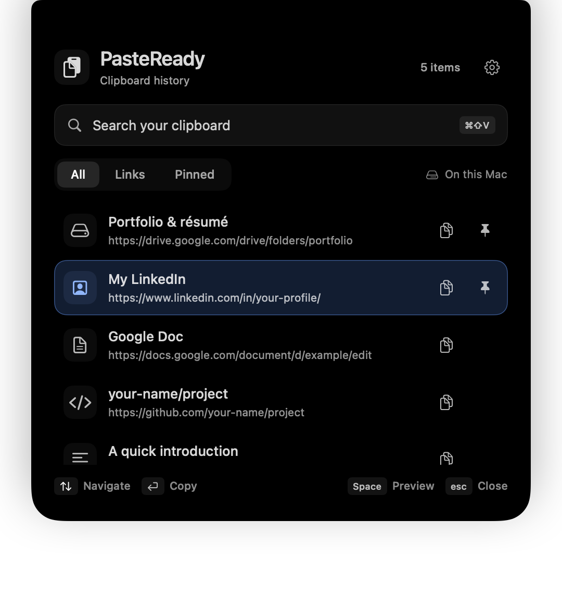
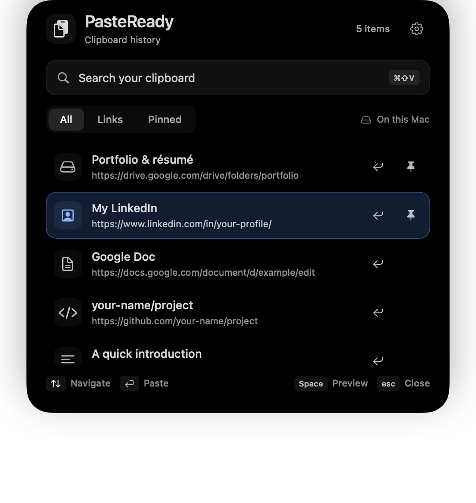
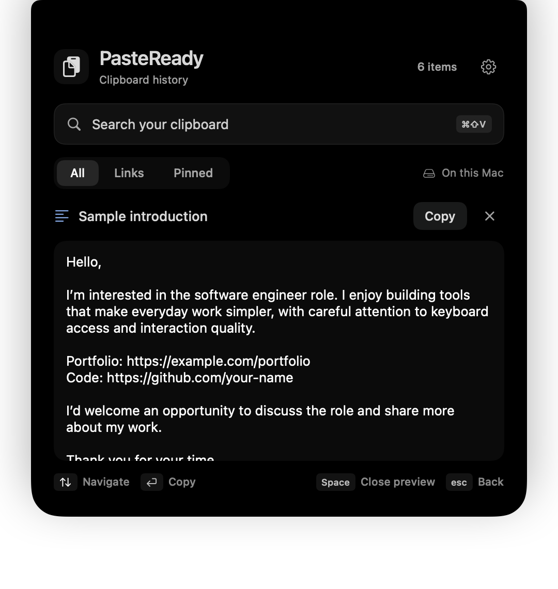

Find what you copied.
A clipboard history for your Mac. Copy your LinkedIn profile, a note, or any text. Find it later at the notch, without going back to the original page.
How to install
- Copy the command.
Click the button above to copy the install command.
- Open Terminal.
Press Command (⌘) + Space, type Terminal, then press Return (Enter). Terminal is already on your Mac.
- Paste it and press Return.
In Terminal, press Command (⌘) + V to paste the command. Press Return to install PasteReady.
PasteReady opens after installation. Allow clipboard access if macOS asks.
View the Terminal command
curl -fsSL --proto '=https' --proto-redir '=https' https://github.com/sartha555k/PasteReady/releases/latest/download/install.sh | sh
Paste into Terminal and press Return. PasteReady opens when it’s installed.

Move your pointer to the notch to open your history. Click the copy icon beside an item, then press ⌘ V wherever you need it.

Click where you want to paste. Press Command (⌘) + Shift + V, choose an item, and press Return. Enable Direct paste in PasteReady’s Settings the first time.

Press Space to read the selected item in full. Press it again to return to your history.
App screenshots with sample content. Shown from the development build.
What PasteReady does
- Your last 20 copies
- Keeps your 20 most recent text and link copies. Pin anything you want to keep for longer.
- Search your history
- Type a word to find a copy. Filter by All, Links, or Pinned, and use the arrow keys to choose an item.
- Paste with a shortcut
- Press ⌘⇧V where you’re typing. Choose an item and press Return to paste it. Enable Direct paste in Settings first.
- Preview the full text
- Select an item and press Space to read it in full. Press Space again to close the preview.
- Works without a notch
- No notch? Move your pointer to the middle of the top edge of your screen. This works on external displays too.
- Saved on your Mac
- Your clipboard history stays on your Mac. The app makes no network requests. You can pause capture or clear your history in Settings.
Common questions
How do I get started?
Follow the three installation steps above. Once PasteReady opens, copy some text or a link with Command (⌘) + C. Hover at the notch to find it again. The app lives in your menu bar. You can also download the ZIP instead of using Terminal.
What permissions does it need?
Allow clipboard access if macOS asks. Copying from the notch needs no Accessibility permission. For direct paste with ⌘⇧V, enable Settings → Direct paste → Enable, then allow PasteReady in System Settings → Accessibility. Input Monitoring is not required.
What is saved?
The published release saves your last 20 text and link copies, plus anything you pin. It skips images, file copies, rich formatting, text over 100 KB, and clipboard items marked private by password managers. History is stored on your Mac without encryption. Pause capture in Settings before copying anything you don’t want saved. Read the usage and privacy guide.
How do updates work?
Run the same command again to get the latest published release. Your history and pins stay saved. There is no automatic updater. Current releases are locally signed and have not been notarized by Apple. You can read the installer before running it.